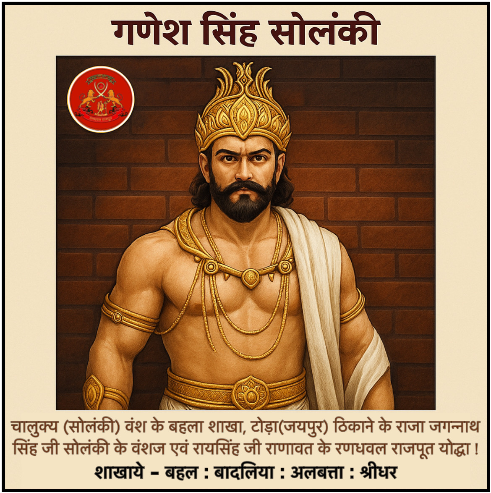

गणेश सिंह सोलंकी

सोलंकी राजपूतों का प्रधान ठिकाना गुजरात प्रान्त का पाटण है जिन्हें चालुक्य वंश भी कहा जाता है जिनमें सिद्धराज सोलंकी के वंशज बनास नदी के तट पर स्थित
“टोडा” (जयपुर) पर राज्य करते थे। 15वी शताब्दी में मांडू के
सुलतान से टोडा पर अधिकार कर लिया था, जिसके बाद “तारा बाई सोलंकिनी” ने ये शपत ली की "मैं उसी वीर राजपूत योद्धा से विवाह करूँगी जो मुझे मेरी जन्म भूमि दिलायेगा " फिर इनका विवाह मेवाड़ राणा रायमल के पुत्र पृथ्वीराज के साथ हुआ । पृथ्वीराज को उड़ना राजकुमार भी कहा जाता था । तब प्रथ्वीराज, राव सुरतान सिंह, और तारा बाई ने टोडा पर आक्रमण कर मांडू सुलतान को मार पुनः टोडा पर सोलंकियों का राज्य कायम किया । 16वी शताब्दी में टोडा (जयपुर) के स्वामी जगन्नाथ सिंह सोलंकी थे, इनकी पुत्री की सगाई आमेर के मानसिंह कछवाहा से तय की गई । किन्तु किसी कारण सगाई टूट गई तब मानसिंह अकबर के साथ मिलकर टोडा पर आक्रमण कर दिया जिससे टोडा पर मानसिंह का अधिकार हो गया, और कुछ बचे हुये सोलंकी राजपूत टोडा में रहे ।
कालांतर में “टोडा” पर मेवाड़ के राणा ने इस हक से आक्रमण किया कि ये राणा रायमल के पुत्र पृथ्वीराज सिसोदिया के वंशजों का गढ़ है। मेवाड़ के सिसोदिया वंश के राणावत शाखा का पुनः अधिकार हुआ। टोडा के प्रसिद्ध राजा रायसिंह राणावत (सिसोदिया) को मेवाड़ से यह जागीर में मिला । तब राजा रायसिंह ने अपनी स्वतंत्र राजधानी में टोडा निवासी बहला वंशी गणेश सोलंकी को अपना रणधवल बनाया । जब कालांतर में सिसोदियों का वहां राज्य छीन लिया गया तब राजपरिवार के साथ साथ गणेश सोलंकी के वंशज भी इधर उधर ठिकानों में चले गये । इनके वंशज अपनी गौत्र "बहल" लिखते है, मारवाड़ में यह खांप बड़ी संख्या में है, बहल खांप का गढ़मंगा (भाट) "भखरी” ठिकाने में रहते है, जिसकी प्राचीन बही में निम्न पद्य ख्यात के नाम से मिला
आसा दासा रायसिंह, भड़ भोजाचंद भोपाल । गुणिजन थानं गुणेशरा, चावा चरु सुकाल ।। चोब नगाड़े चोढ़, बढ़तो सब जात्यां बिचे |
कल हल भणतां कोढ़, रूप भजाड़े रायसिंहरा ।।
अब बहल खांप में आसावत, दासावत, भोजावत और चंदावत
शाखाये है बालचंद नामक खांप चंदा की संतान है जो बहलचंद नामक व्यक्ति से चली थी । मगर आम दमामी राजपूतों और बहल कौम इस
|
बात को कम स्वीकार करती है अलबत्ता श्रीधर और बादलिया बहलों की प्रशाखा है |
← वापस जाएं